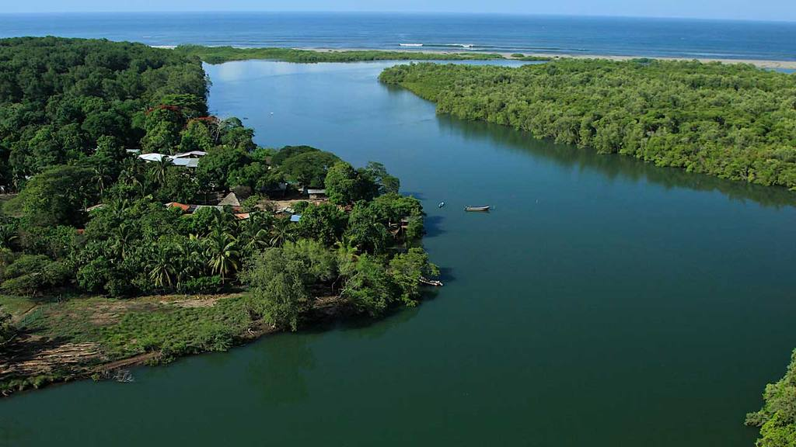
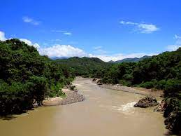
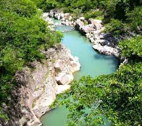

Los ríos forman parte de los atractivos turísticos naturales de El Salvador, en ellos puede disfrutarse del paisaje que ofrecen los recursos naturales que tenemos. Los ríos más caudalosos suelen usarse para generar energía, potabilizar agua para el consumo de la población, realizar pesca o deportes acuáticos, así como también bañarse. El río más largo de El Salvador es el río Lempa, el cual tiene un recorrido de 422 kilómetros sobre el país y desemboca en el océano pacífico, en su recorrido se encuentran algunas presas de generación de energía, las cuales abastecen de energía eléctrica a gran parte del país.
A pesar de que la contaminación de los ríos es un tema muy grave y a veces poco abordado por las autoridades correspondientes, en el país aún existen ríos libres de contaminación y son generalmente los que se encuentran alejados de las zonas urbanas. También las cuencas de los ríos, es decir el lugar geográfico donde nace, suelen estar libres de contaminación y son ideales para visitarlos. Los ríos son también parte de la cultura de El Salvador, en ellos se cuentan muchas leyendas populares, como por ejemplo la leyenda de La Siguanaba o la Leyenda del Cipitío. Ambos personajes de la mitología salvadoreña que comparten una historia en común menciona que la Sihuanaba era una mujer hermosa que abandonó a su hijo, el Cipitío. Y como castigo fue obligada a andar de manera errante lavando en los ríos. El Cipitío por su parte es un niño eterno que tira flores a las muchachas que llegan a los ríos para robar su corazón.
En esta sección conoceremos los ríos más importantes de El Salvador, y principalmente aquellos donde los turistas en El Salvador deciden bañarse en sus frescas aguas para pasar un día de mucha tranquilidad.
|  |  |  |
|---|---|---|
| Rio Lempa | Rio Sumpul | Rio Sapo |